Quick facts
About Gigantamax Venusaur in GO
Cobalion has been featured in Max Battle Day / Water Festival events (example: July 19, 2025 Max Battle Day). Check official event posts for exact dates and paid Timed Research bonuses. :contentReference[oaicite:1]{index=1}
Weaknesses & resistances
| Category | Details |
|---|---|
| Weak to |
 Fighting • Fighting •
 Ground • Ground •
 Water Water
|
| Resists / neutral | Resists Normal, Flying, Poison, Rock, Bug, Psychic, Ice, Dragon, Fairy |
Common moveset & G-Max notes
Community sim and database results list top moves for Gigantamax Venusaur as Vine Whip (fast) + G-Max Vine Lash (charged) for maximum DPS/TDO in many rotations. It can roll other Grass/Poison charged moves (e.g., Frenzy Plant in theoretical sets), but G-Max Vine Lash is the signature effect to watch for. Sunny weather boosts Grass moves; be careful with weather that amplifies its output.
Top counters (images included)
Typical fast moves: Waterfall or Dragon Breath or Bite.
| Pokémon | Fast Move | Charged Move(s) | Notes | ||
|---|---|---|---|---|---|
 Garchomp Garchomp |
Mud Shot / Dragon Tail | Earthquake / Sand Tomb / Fire Blast / Outrage | Earth Power | Dragon Tail (14) and Earthquake / Fire Blast (140) | |
|
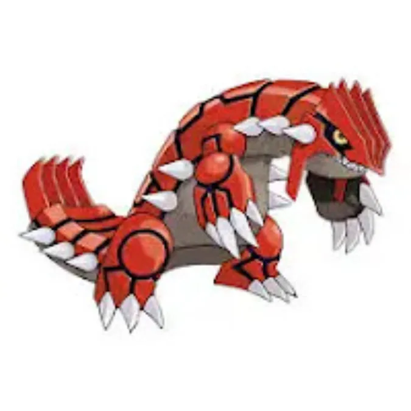Groudon
|
Mud Shot / Dragon Tail | Earthquake / Fire Blast / Solar Beam | Fire Punch / Precipice Blades | Dragon Tail (14) and Solar Beam (180) | |
 Excadrill Excadrill |
Mud Slap / Mud Shot / Metal Claw | Earthquake / Drill Run / Scorching Sands / Rock Slide / Iron Head | - | Mud Slap (19) and Earthquake (140) | |
|
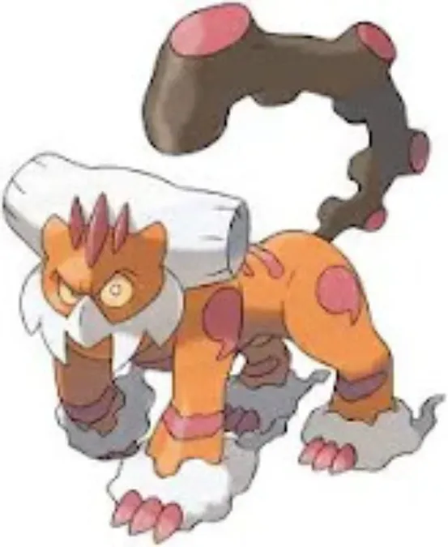Landorus
|
Mud Shot / Extrasensory | Earthquake / Superpower / Bulldoze / Stone Edge | Sandsear Storm | Rock Throw (13) and Focus Blast (140) | |
|
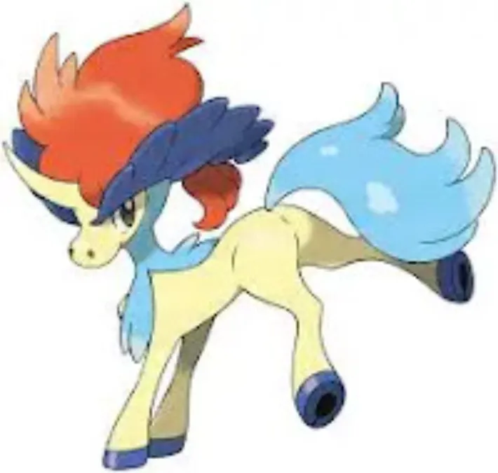Keldeo
|
Low Kick / Poison Jab | Aqua Jet / X-Scissor / Hydro Pump / Sacred Sword / Close Combat | - | Poiosn Jab (13) and Hydro Pump (130) | |
|
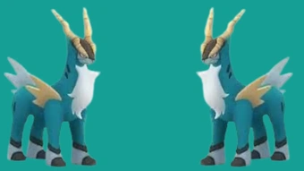Cobalion
|
Metal Claw / Double Kick / Zen Headbutt | Stone Edge / Iron Head / Close Combat | Sacred Sword | Zen Headbutt (11) and Stone Edge / Close Combat (105) | |
 Marshadow Marshadow |
Counter / Sucker Punch / Poison Jab | Ice Punch / Rock Slide / Thunder Punch / Fire Punch / Close Combat | - | Counter / Poison Jab (13) and Close Combat (105) | |
|
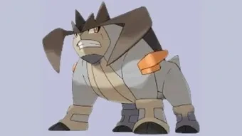Terrakion
|
Smack Down / Double Kick / Zen Headbutt | Earthquake / Rock Slide / Closw Combat | Sacred Sword | Smack Down (13) and Earthquake (140) | |
|
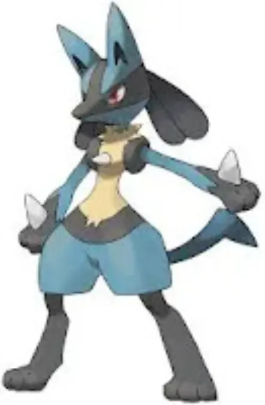Lucario
|
Counter / Bullet Punch | Close Combat / Power-Up Punch / Aura Sphere / Shadow Ball / Flash Cannon / Blaze Kick / Thunder Punch | Force Palm | Counter (13) and Close Combat (105) | |
|
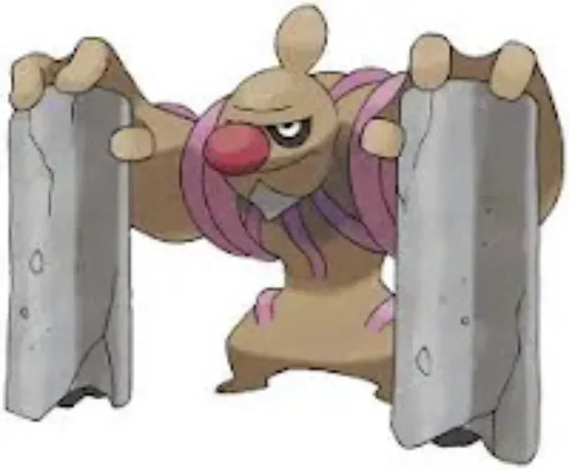Conkeldurr
|
Counter / Pison Jab | Dynamic Punch / Focus Blast / Stone Edge | Brutal Swing | Counter / Poison Jab (13) and Focus Blast (140) |
| Pokémon | Fast Move | Charged Move(s) | Notes | ||
|---|---|---|---|---|---|
|
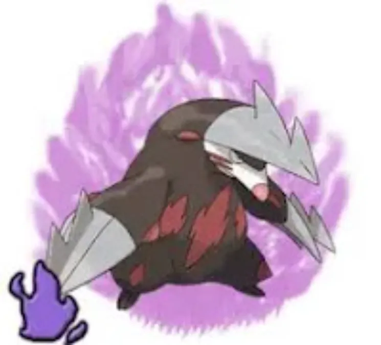Gigantamax Charizard
|
Mud Slap, Mud Shot, Metal Claw | Earthquake, Drill Run, Scorching Sands, Rock Slide, Iron Head | - | Mud Slap(19) and Earthquake(140). | |
|
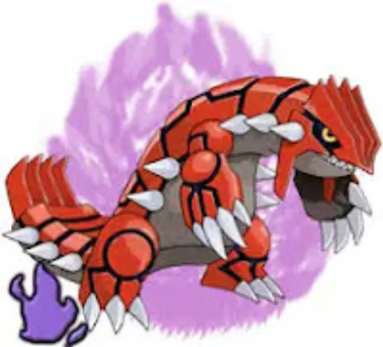Shadow Groudon
|
Mud Shot / Dragon Tail | Earthquake / Solar Beam / Fire Blast | Precipice Blades / Fire Punch | Dragon Tail (14) and Solar Beam (180) | |
|
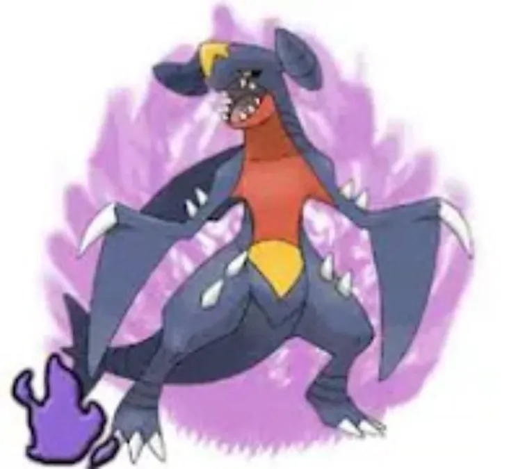Shadow Garchomp
|
Mud Shot / Dragon Tail | Earthquake / Sand Tomb / Fire Blast / Outrage | Earth Power | Dragon Tail (14) and Fire Blast / Earthquake (140) | |
 Gigantamax Snorlax Gigantamax Snorlax |
Fire Spin | Sky Attack / Overheat | Good Fire + Flying options; Sky Attack gives strong STAB Flying damage. | ||
 Gigantamax Toxtricity Gigantamax Toxtricity |
Low Kick, Counter | Close Combat, Low Sweep, Shadow Ball | Rage Fist | Counter(13) and Close Combat(105) | |
 Gigantamax Gengar Gigantamax Gengar |
Mud Slap, Astonish | Dynamic Punch, Earth Power, Shadow Punch, Poltergeist | - | Mud Slap(19) and Poltergeist(140) | |
 Gigantamax Gengar Gigantamax Gengar |
Counter, Force Palm, Bullet Punch | Close Combat, Dynamic Punch,Superpower, Upperhand, Heavy Slam | - | Counter(13) and Close Combat(105) | |
 Gigantamax Gengar Gigantamax Gengar |
Mud Shot, Dragon Tail | Earthquake, Sand Tomb, Fire Blast, Outrage | Earth Power | Dragon Tail(14) and Fire Blast or Earthquake(140) | |
 Gigantamax Gengar Gigantamax Gengar |
Counter, Bullet Punch | Dynamic Punch, Close Combat, Cross Chop, Rock Slide, Heavy Slam | Karate Chop, Submission, Stone Edge, Payback | Counter(13) and Stone Edge or Close Combat(105) | |
 Gigantamax Gengar Gigantamax Gengar |
Mud Shot, Dragon Tail | Earthquake, Fire Blast, Solar Beam | Fire Punch, Precipice Blades | Dragon Tail(14) and Solar Beam(180) | |
 Gigantamax Gengar Gigantamax Gengar |
Psycho Cut | Psystrike / Shadow Ball | Top Psychic attacker — fall back to this if Fire/Flying are scarce. | ||
|
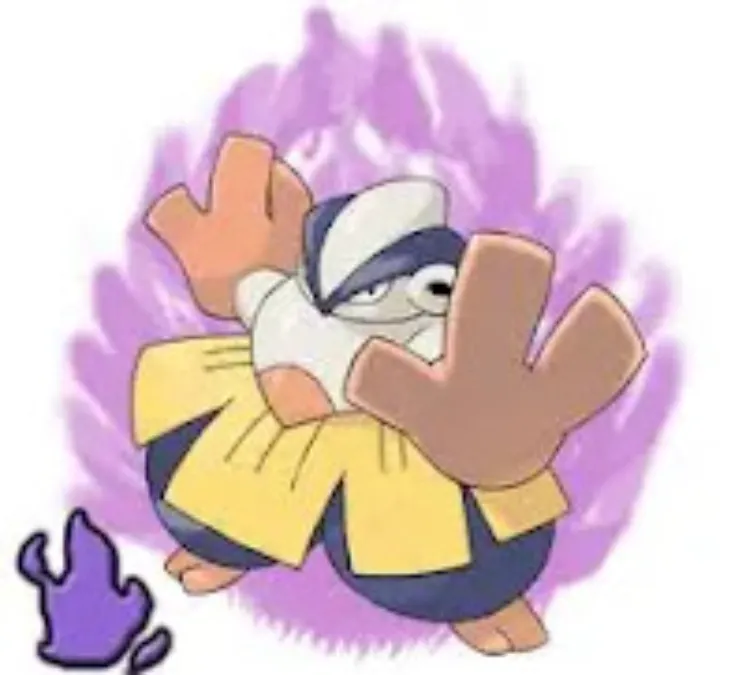Shadow Hariyama
|
Counter / Force Palm / Bullet Punch | Dynamic Punch / Close Combat / Superpower / Upperhand / Heavy Slam | - | Counter (13) and Close Combat (105). |
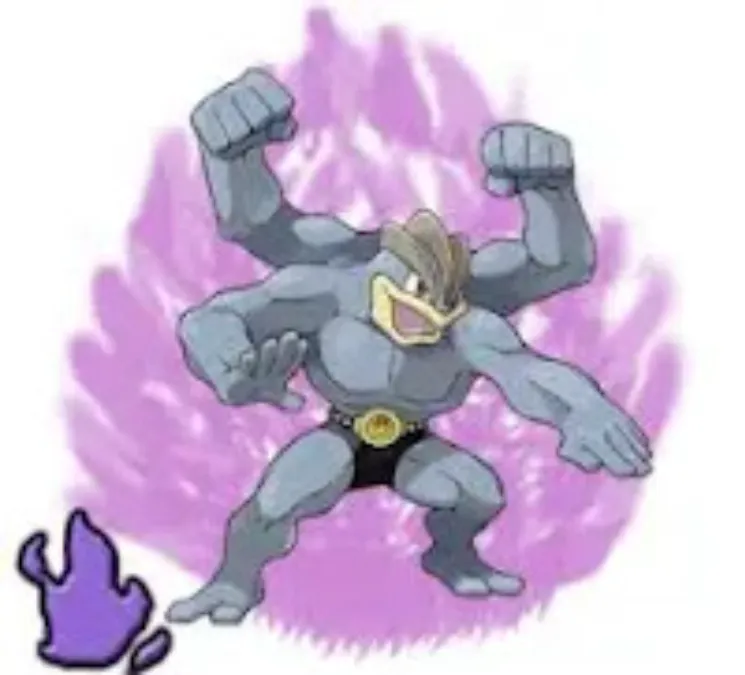Shadow Machamp
|
Counter / Bullet Punch | Dynamic Punch / Close Combat / Cross Chop / Rock Slide / Heavy Slam | Karate Chop / Submission / Stone Edge / Payback | Counter (13) and Stone Edge / Close Combat (105). |
|
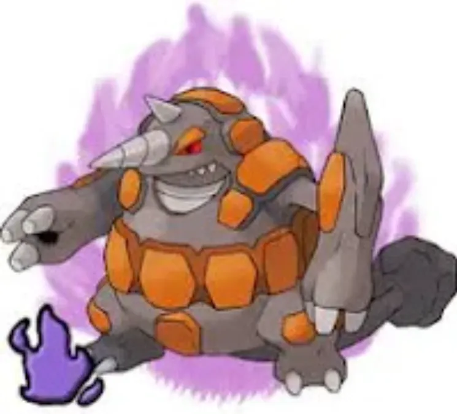Shadow Rhyperior
|
Mud Slap / Smack Down | Skull Bash / Superpower / Earthquake /Stone Edge /Surf / Breaking Swipe | Rock Wrecker | Mud Slap (19) and Earthquake (140) | |
|
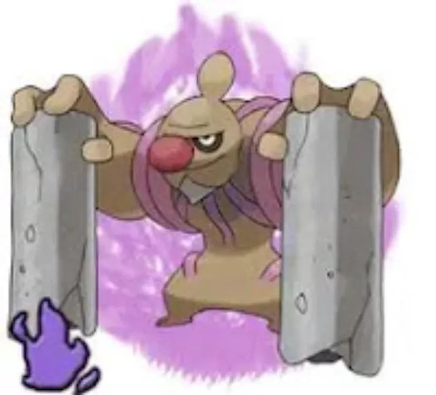Shadow Conkeldurr
|
Counter / Poison Jab | Stone Edge / Dynamic Punch / Focus Blast | Brutal Swing | Counter / Poison Jab (13) and Focus Blast (140) | |
|
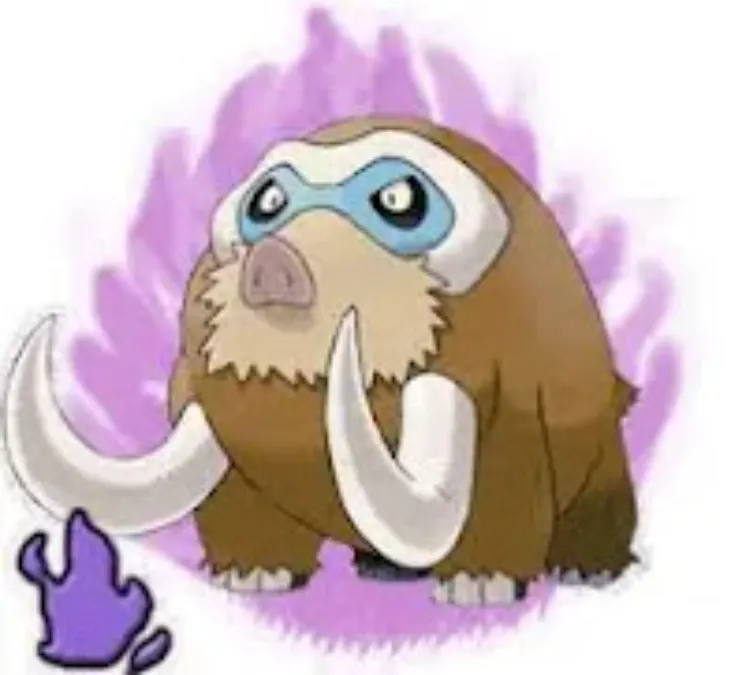Shadow Mamoswine
|
Mud Slap / Powder Snow | Bulldoze / High Horsepower / Stone Edge / Avalanche / Icicle Spear | Ancient Power | Mud Slap (18) and High Horsepower / Stone Edge (105) | |
|
Shadow Excadrill
|
Mud Slap / Mud Shot / Metal Claw | Earthquake / Drill Run / Scorching Sands / Rock Slide / Iron Head | - | Mud Slap (19) and Earthquake (140) | |
|
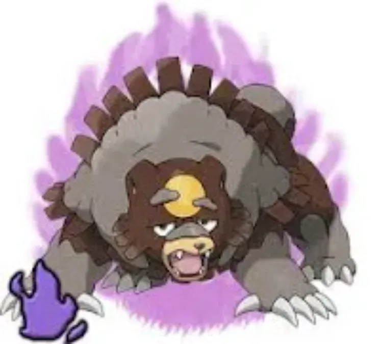Shadow Excadrill
|
Tackle / Rock Smash | Swift, Aerial Ace, Fire Punch, Trailblaze, Thunder Punch, Ice Punch | High Horsepower | Rock Smash(17) and High Horsepower(105) |
| Pokémon | Fast Move | Charged Move(s) | Notes | ||
|---|---|---|---|---|---|
|
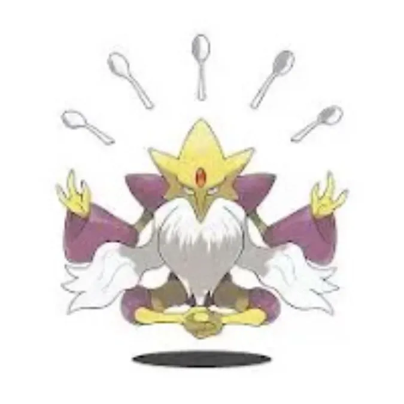Mega Alakazam
|
Psycho Cut / Confusion | Focus Blast / Shadow Ball / Fire Punch / Future Sight | Counter / Psychic / Dazzling Gleam | Confusion (19) and Focus Blast (140) | |
|
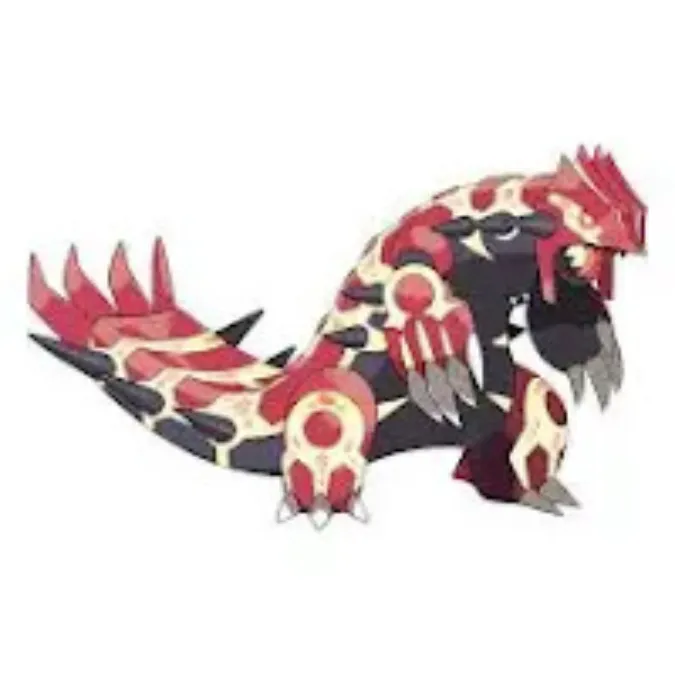Primal Groudon
|
Mud Shot / Dragon Tail | Earthquake / Solar Beam / Fire Blast | Precipice Blades / Fire Punch | Dragon Tail (14) and Solar Beam (180) | |
|
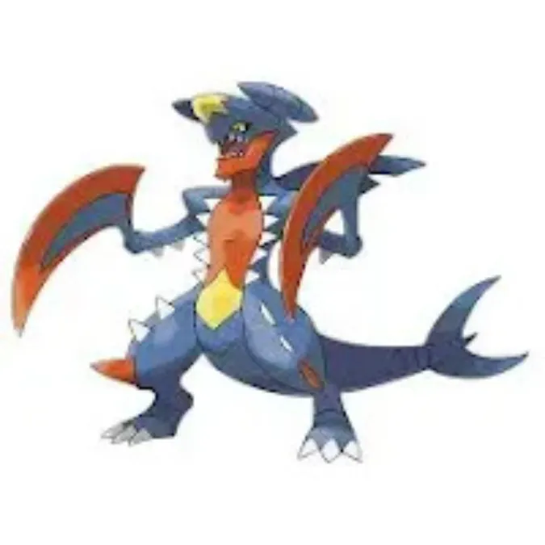Mega Garchomp
|
Mud Shot / Dragon Tail | Earthquake / Sand Tomb / Fire Blast / Outrage | Earth Power | Dragon Tail (14) and Fire Blast / Earthquake (140) | |
|
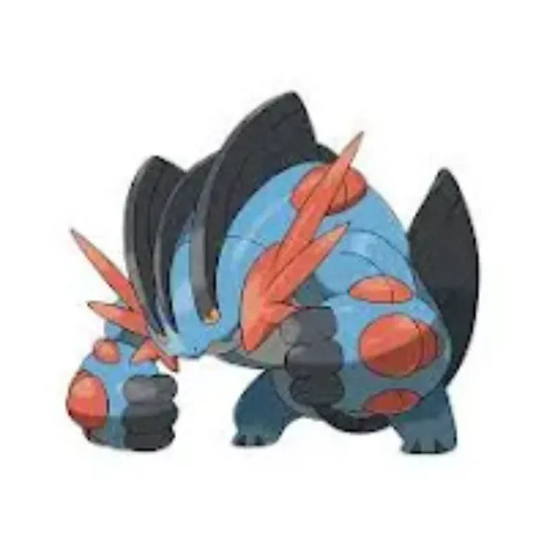Mega Swampert
|
Mud Shot / Water Gun | Sludge / Sludge Wave / Earthquake / Surf / Muddy Water | Hydro Cannon | Water Gun (5) and Sludge Wave (105) | |
|
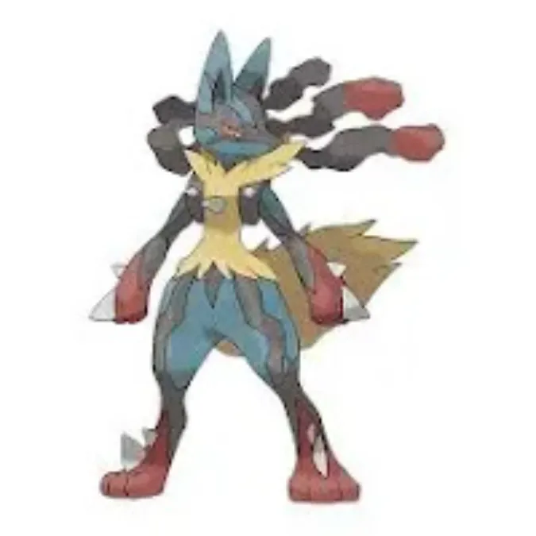Mega Lucario
|
Counter / Bullet Punch | Close Combat / Power-Up Punch / Aura Sphere / Shadow Ball / Flash Cannon / Blaze Kick / Thunder Punch | Force Palm | Counter (13) and Close Combat (105) | |
|
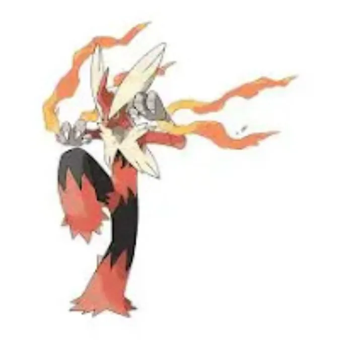Mega Blaziken
|
Counter / Fire Spin | Focus Blast / Brave Bird / Overheat / Blaze Kick | Stone Edge, Blast Burn | Counter / Fire Spin (13) and Overheat (160) | |
|
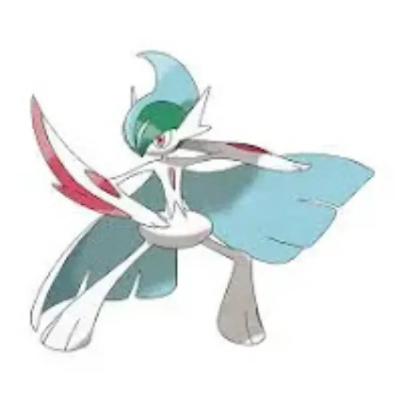Mega Gallade
|
Confusion / Psycho Cut / Low Kick / Charm | Close Combat / Leaf Blade / Psychic | Synchronoise | Charm (20) and Close Combat (105) | |
|
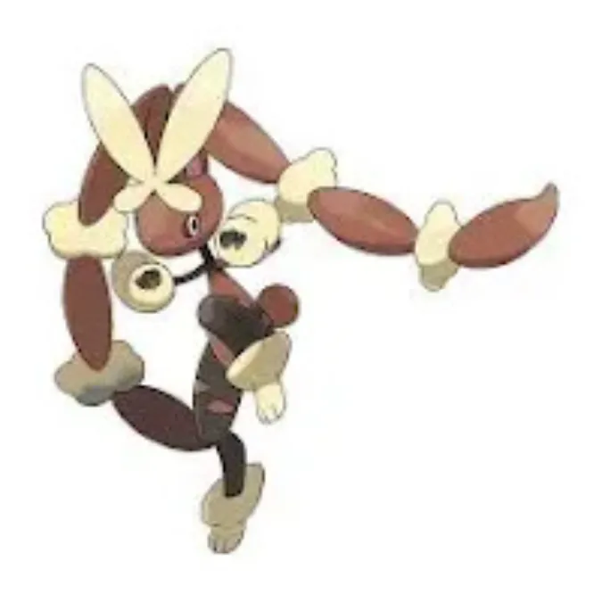Mega Lopunny
|
Pound / Low Kick / Double Kick | Hyper Beam / Focus Blast / Fire Punch / Triple Axel | - | Double Kick (10) and Hyper Beam (150) | |
|
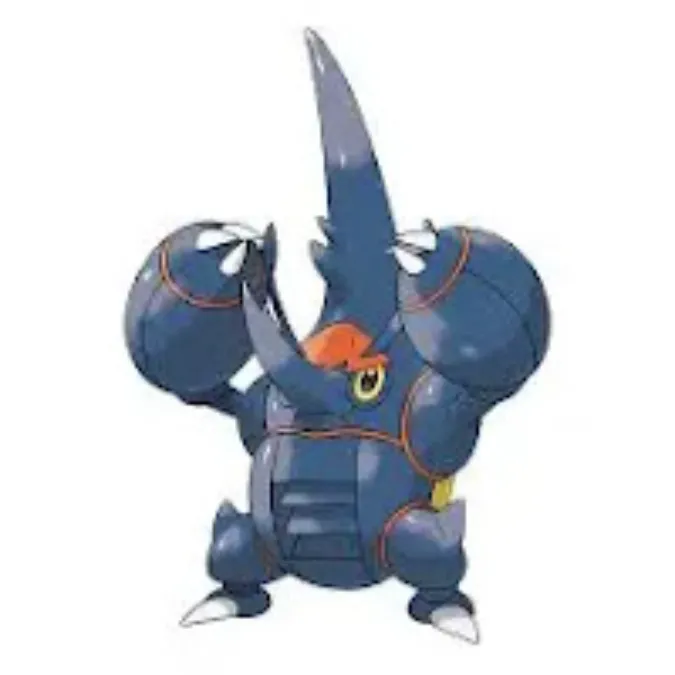Mega Heracross
|
Counter / Struggle Bug | Close Combat / Upper Hand / Earthquake / Rock Blast / Megahorn | - | Struggle Bug (15) and Close Combat / Megahorn (105) | |
 Metang Metang |
Fire Spin | Sky Attack / Overheat | Good Fire + Flying options; Sky Attack gives strong STAB Flying damage. | ||
 Raboot Raboot |
Powder Snow | Avalanche / Earthquake | Top Ice DPS for neutralizing Grass/Flying weak points; Avalanche hits very hard. | ||
 Toxtricity Toxtricity |
Psycho Cut | Psystrike / Shadow Ball | Top Psychic attacker — fall back to this if Fire/Flying are scarce. | ||
 Articuno Articuno |
Psycho Cut | Psystrike / Shadow Ball | Top Psychic attacker — fall back to this if Fire/Flying are scarce. | ||
 Cryogonal Cryogonal |
Psycho Cut | Psystrike / Shadow Ball | Top Psychic attacker — fall back to this if Fire/Flying are scarce. | ||
 Rillaboom Rillaboom |
Mud Shot, Dragon Tail | Earthquake, Sand Tomb, Fire Blast, Outrage | Earth Power | Dragon Tail(14) and Earthquake or Fire Blast(140) | |
 Venusaur Venusaur |
Confusion, Psycho Cut, Low Kick, Charm | Close Combat, Leaf Blade, Psychic | Synchronoise | Charm(20) and Close Combat(105) |
Moves & Threats
Cobalion’s common fast moves are Metal Claw and Double Kick. Charged moves include Iron Head, Close Combat, and Stone Edge.
- Iron Head hits Fairy/Rock hard but is resisted by Fire and Steel.
- Close Combat punishes Rock/Dark counters—favour Fire/Ghost here.
- Stone Edge threatens Fire/Flying—avoid Charizard if it’s present.
Moves & Threats
Cobalion’s common fast moves are Metal Claw and Double Kick. Charged moves include Iron Head, Close Combat, and Stone Edge.
- Iron Head hits Fairy/Rock hard but is resisted by Fire and Steel.
- Close Combat punishes Rock/Dark counters—favour Fire/Ghost here.
- Stone Edge threatens Fire/Flying—avoid Charizard if it’s present.
Weather Effects
The Pokémon you catch is regular Gyarados; weather boost depends on its Water/Flying typing.
Practical battle tips
Battle Tips
- Prioritize Electric teams; swap to Grass when Rain powers up both sides.
- Run a matching Mega for teamwide damage bonuses and extra candies.
- Charm/Fairy options are safe when Crunch is common and Outrage is absent.
- Dodge one nuke (Hydro Pump/Outrage) to keep shadows alive and sustain DPS.
Team size & strategy
Max Battles scale with event. For Gigantamax Venusaur rotations, community sims and event reports recommend between 6–30 trainers depending on whether players bring high-tier Dynamax/Gigantamax leads and weather boosts — festival windows may allow larger lobbies and easier clears. Coordinate Mega/Max leads where allowed to maximize early damage windows.
Catch CP & shiny notes
Catch CP ranges depend on IVs and weather — community databases list capture CP windows per IV for Gigantamax Venusaur; shiny variants have been available during some event windows. Always check the active event post for exact shiny odds and capture ranges.
FAQ
Can Stakataka be shiny in Pokémon GO?
Not currently. Shiny Stakataka has not yet been released in raids or events.
What are best moveset of Stakataka?
Best movset of Stakataka are Rock Throw which does damage of 13 under Fast Attack and Stone Edge of 105 under Charged Attack.
Are Shadow Pokémon better?
Yes—Shadow forms have +20% attack, making them excellent choices if available.
What is the best weather to raid Stakataka?
Cloudy weather to boosts Fighting type counters, Sunny weather to boosts Ground type counters.